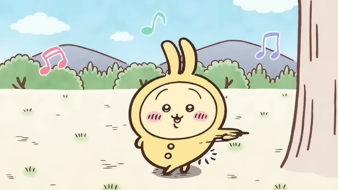

Usagi is a kind and compassionate rabbit, they have a hobby of eating and adventuring. Despite the fact Usagi communicates in a different way (with the sound 'una' or any other silly sound), they actively express themselves through not just their words but their acts for example in the episode where Usagi and Hachiware have parts of themselves turned into chimeras, Usagi actively backs away their new monstrous arms from Chiikawa in fear of hurting them even though they, themselves are quite upset with this new bodily change they actively put their friends' safety and comfort over their own despair and fear. Secondly, where as Momonga is pushy and quite selfish, Usagi in return is generous and happily shares their food with their friends such as when Chiikawa and friends find a giant piece of omurice Usagi is happy to dig in with their friends, they don't complain or try to push the other critters away from eating with them, they happily share any and all great portions of food the group stumbles upon with everyone and anyone so long as they don't mean harm to their friends. Whereas Momonga tries to shoo Usagi away from sharing food, even though Usagi is just trying to help and share seasoning for their white rice so they don't have to eat plain old rice. Usagi also is quite smart despite their chaotic nature and eccentricities Usagi actively has a higher level weeding certificate than both Chiikawa and Hachiware at Level 3 and then later on in the web comic, they passed the Level Two exam while Hachiware and Chiikawa both have a Level Five License and... well Momonga has no weeding license as they aren't even the Real Momonga but a chimera that stole the body that originally belonged to the flying squirrel critter. For my last point, Usagi is an extremely reliable and loyal friend, in the anime and web comics whenever Chiikawa and Hachiware are in trouble, often times it's Usagi who comes to the rescue. Even when both Hachiware and Usagi are captured by a chimera while having a sleepover, despite knowing that Chiikawa is a crybaby Usagi puts their belief into Chiikawa to save them and doesn't seem too alarmed because they know they can rely on their friends just as their friends rely on them. Not only that but Usagi is the one who jumps in to scare off Momonga when they are bullying Chiikawa in the later chapters of the manga(webcomic), another example of Usagi's relability is when they run into Anoko in the anime/comic when Hachiware is knocked down after being hit by Anoko, while Chiikawa gets worried about Hachiware and starts crying, it's actually Usagi who jumps face to face with this terrifying new chimera who we have seen easily wipe the floor with small little critters before hand, and it's Usagi who is the one that chases off Anoko to protect their friends.
